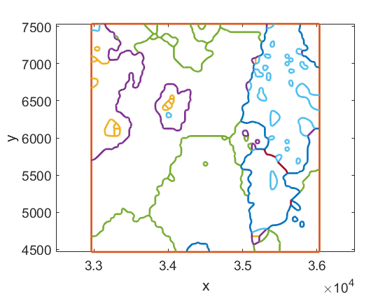
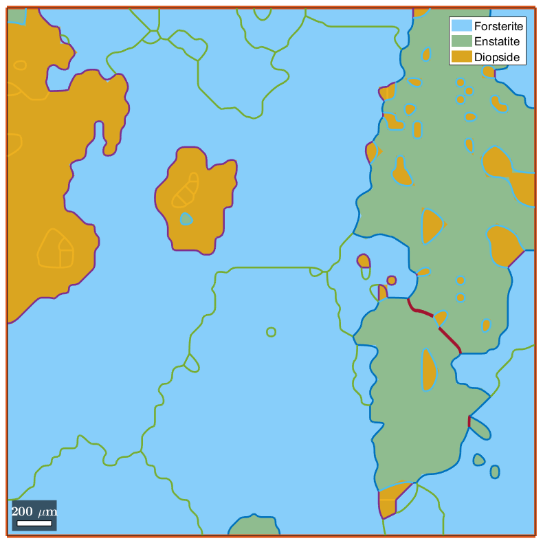
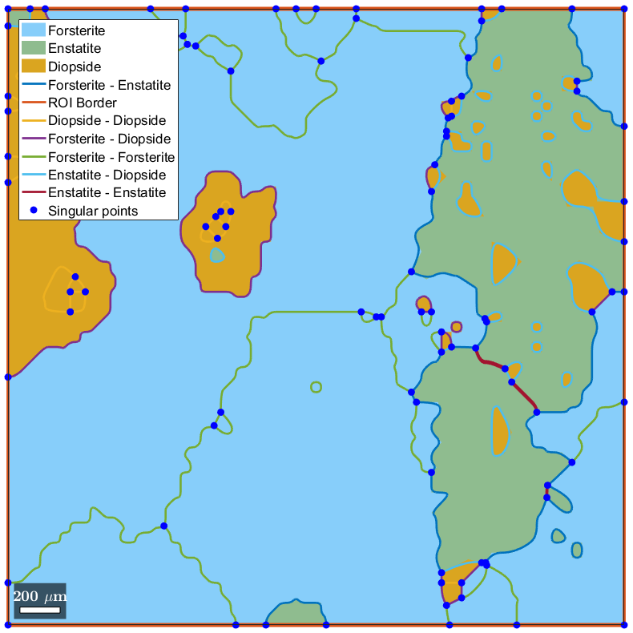

Contents
mtexdata small ebsd = ebsd('indexed'); grains = calcGrains(ebsd); G=gmshGeo(grains);
SMALL data loaded in variables
'ebsd'
ebsd = EBSD (<a href="matlab:docmethods(ebsd)">show methods</a>, <a href="matlab:plot(ebsd)">plot</a>)
Phase Orientations Mineral Color Symmetry Crystal reference frame
0 1197 (32%) notIndexed
1 1952 (52%) Forsterite light blue mmm
2 290 (7.8%) Enstatite light green mmm
3 282 (7.6%) Diopside light red 12/m1 X||a*, Y||b*, Z||c
Properties: bands, bc, bs, error, mad, x, y
Scan unit : um
Plot the whole geometry
The whole geometry can be plotted with the usual plot command:
plot(G)
The orientation used for plotting is inherited from the MTEX preferences. It ensures consistency between the two kinds of plot. For instance, if you want to superimpose the grains boundaries defined in G and the original grains:
plot(grains,'noBoundary') hold on plot(G) legend('Location', 'NorthWest')
Plot specific grains
Linear indexing helps plotting specific grains. For example, the following plots grains 65 and 67:
figure plot(G([65 67])) legend('Location', 'Best')
Alternatively, one can specify the phase to be plotted. E.g:
plot(G('Diopside')) legend('Location', 'Best')